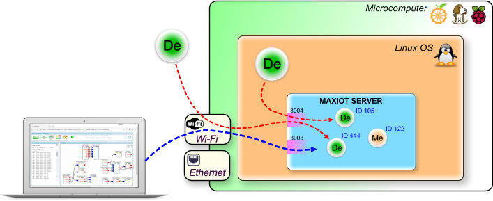

MAXIOT STUDIO¶
MAXIOT STUDIO ეს არის ინსტრუმენტი, რომლის საშუალებით ჩვენ შეგვიძლია ვიმუშაოთ MAXIOT SERVER-რში რეალიზებულ ვირტუალურ სივრცესთან და სივრცეში განთავსებულ კომპონენტებთან.
ზოგადი აღწერა¶
MAXIOT STUDIO წარმადგენს ვებ აპლიკაციას, რომლის ძირითადი ნაწილი დაწერილია პროგრამული ენის - ჯავა სკრიპტის გამოყენებით. რადგან MAXIOT STUDIO წარმადგენს ვებ აპლიკაციას, მას არ ჭირდება დაინსტალირება - მისი გაშვება შეიძლება, როგორც რომელიმე ვებ საიტიდან, სადაც ის განთავსებულია, ასევე გადმოწერის შემთხვევაში უშუალოდ პერსონალური კომპიუტერის ლოკალური დისკიდან, ორივე შემთხვევაში MAXIOT STUDIO-ს მუშაობას უზრუნველყოფს ვებ ბროუზერი.
{kind=link}
MAXIOT STUDIO საკმაოდ დიდი აპლიკაციაა, რომელშიც გამოყენებულია ბევრი სხვადასხვა ჯავა ბიბლიოთეკა. არსებობს განსხვავება სხვადასხვა ვებ ბროსზერებს შორის - MAXIOT STUDIO გამართულად მუშაობს Goolge Chrome ვებ ბროუზერში. მიუხედავათ იმისა, რომ Goolge Chrome ეშვება მრავალ სხვადასხვა მოწყობილობაზე, ამ ეტაპზე MAXIOT STUDIO მიერ მოთხოვნილი რესურსები, უფრო კარგად მიესადაგება პერსონალურ კომპიუტერის რესურსებს.
STUDIO-ს გაშვება¶
STUDIO-ს ვებ აპლიკაციის გაშვება, შეგვიძლია სხვადასხა ხერხით:
www.max-iot.com ვებ საიტზე იპოვეთ და დააჭირთ**MAXIOT STUDIO APP** - წარწერას. ეს მეთოდი იტხოვს ინტერნეტის არსებობას და კარგია იმით რომ თქვენს მიერ გახსნილი MAXIOT STUDIO აპლიკაცია იქნება ყოველთვის ბოლო ვერსიის.
თუ თქვენ კომპიუტერი იმყოფებით იმავე ლოკალურ ქსელში, რომელშიც იმყოფება MAXIOT სისტემის პლატფორმა (მიკროკომპიუტერი რომელშიც გაშვებულია MAXIOT სერვერი) მაშინ შეგიძლიათ Goolge Chrome მისამართის ველში ჩაწეროთ პლატფორმის სახელი, რის შედეგად გაიხსენბა ვებ გვერდი სადაც უნდა იპოვოთ და დააჭიროთ MAXIOT STUDIO APP - წარწერას. გახსოვდათ, რომ ამ მეთოდით გახსნილი MAXIOT STUDIO აპლიკაცია არ იქნება ბოლო ვერსიის.
www.max-iot.com ვებ საიტიდან თქვენ შეგიძლიად გადმოწეროთ zip ფორმატით დაარქივებული MAXIOT STUDIO აპლიკაცია. გადმოწერეთ და და განაარქივეთ თქვენთვის სასურველ ადგილას. აპლიკაციის გაშვების შემთხვევაში Goolge Chrome ვებ ბროზერის მისამართების ვეში ჩაწერეთ გა განარქივებული ფოლდერში მყოფი index.html -ფაილამდე.
STUDIO-ს IP მისამართი და სახელი¶
იმისთვის რომ MAXIOT STUDIO დავაკავშიროთ MAXIOT SERVER-თან, ამისთვის უნდა ვიცოდეთ იმ ფიზიკური ან ვირტუალური კომპიუტერის სახელი ან IP მისამართი, რომელზეც გაშვებულია MAXIOT SERVER-ი. უშუალოდ კომპიუტერი შეიძლება იყოს ჩართული ლოკალურ ქსელში Wi-Fi ან Ethernet - ტის საშუალებით, როგორც ეს აღწერილია დოკუმენტაციის (MAXIOT SERVER - გარე ქსელთან კავშირი) სექციაში. ორივე შემთხვევაში კომპიუტერის ჩართვისას მას ენიჭება რაიმე IP მისამართი, რაც წარმოადგენს პრობლემას რადგან ჩვენ არ გვეცოდინება შეცვლილი IP მისამართი, ისევე როგორც არ ეცოდინება იმ სხვა მოწყობილობებს, რომლებიც უნდა დაუკავშირდნენ MAXIOT SERVER-ს. აქედან არსებობს 2 გამოსავალი:
შეგახსენებთ რომ დოკუმენტაციის ამ სექციაში განხილულია, ის შემთხვევა როდესაც MAXIOT SERVER და მოწყობილობა რომელიც მას უკონექტდება იმყოფებიან ერთიდაიგივე ლოკალურ ქსელში. სულ სხვა მოცემულობაა როცა საჭიროა, რაიმე მოწყობილობის გარე ქსელიდან დაკავშირება MAXIOT SERVER - თან. ეს ბოლო არა განიხილული ამ დოკუმენტაციაში რადგან ის ითხოვს IT ტექნოლოგიების გარკვეულ ცოდნას.
STUDIO-ში სერვერის მისამართის მითითება¶
იმისთვის რომ MAXIOT STUDIO დავაკავშიროთ MAXIOT SERVER-თან, ამისთვის ჯერ უნდა მივუთითოთ აპლიკაციას MAXIOT SERVER - ის მისამართი, ამისთვის:
გავხსანთ MAXIOT STUDIO აპლიკაცია Goolge Chrome -ში , დავაჭიროთ ლოგოს რომელიც იმყოფება აპლიკაციის მარჯვენა ზედა კუთხში , რომლის ქვემოთ არის წარწერა Options.

აპლიკაციის მარცხენა მხარეს გაიხსნება მისამართის შესაყვანი ორი მწვანე ველი. სადაც პირველი ველში, რომლის თავზე არის წარწერა SERVER IP: უნდა ჩაიწეროს MAXIOT SERVER-ს IP მისამართი ან სახელი.

მეორე ველში, რომლის თავზე არის წარწერა PORT: უნდა ჩაიწეროს, ის პორტის ნომერი, რომელიც სპეციალურად არის გამოყოფილი MAXIOT STUDIO-თვის. სტანდარტულად ამ პორტის ნომერია 3003
{kind=link}
იმისთვის, რომ დავიმახსოვროთ პარამეტრები უნდა დავაჭიროთ მწვანე ველების გვერით არსებულ ლოგოს - ნარინჯისპერ ღრუბლი, რომლის შიგნით არის მოთავსებუი სიმბოლო S - რაც ნიშნავს Save-ს დამახსოვრებას.
იმისთვის, რომ გამოვიდეთ Options რეჯიმიდან, დააჭირეთ აპლიკაციის მარცხენა ზედა კუთხეში არსებულ დიდ წითელი ღრუბლის ლოგოს.
STUDIO-ს დაკონექტება ლოკალურ სერვერთან¶
STUDIO ტერმინალი და საინფორმაციო დაფა¶
ინფორმაცია მალე დაემატება
STUDIO-ს დაკავშირება MAXIOT-ის სერვერთან¶
ინფორმაცია მალე დაემატება
STUDIO კომპონენტების ოთახები¶
ინფორმაცია მალე დაემატება